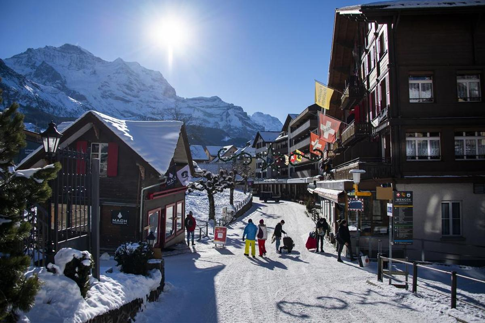
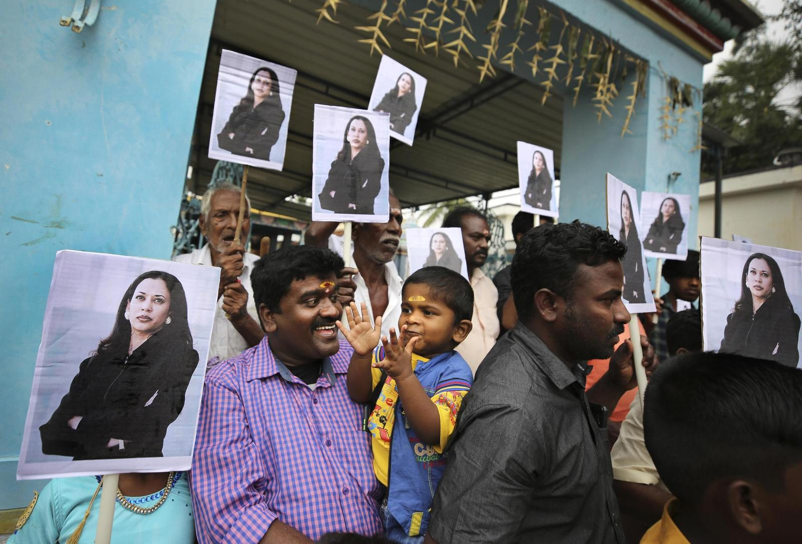
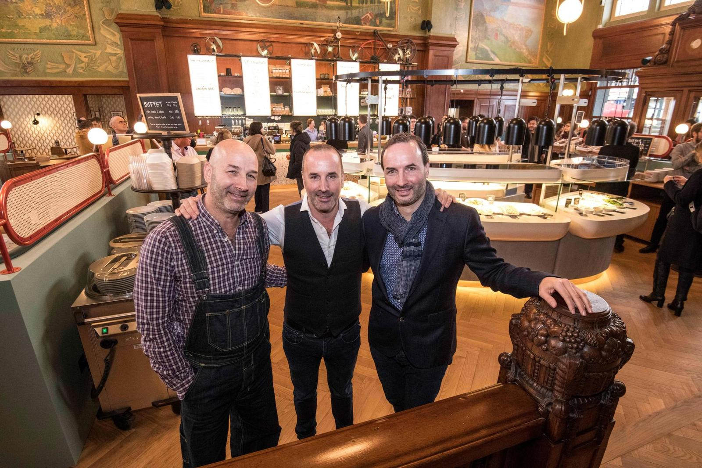
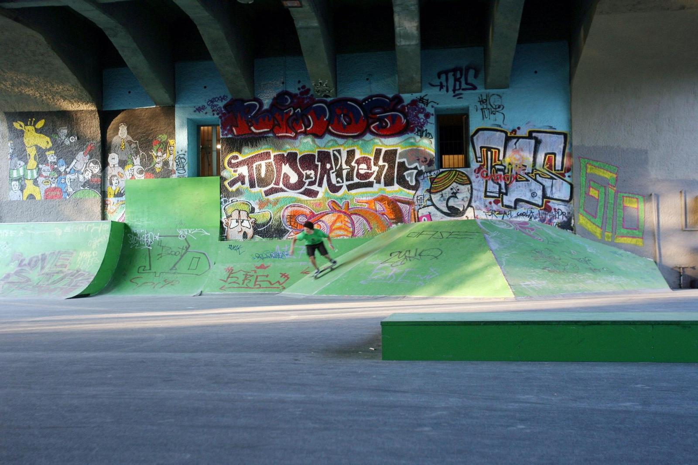

Überraschung am Autosalon Genf
Mercedes sorgt mit Retrokollektion für Furore.
Otto Leseberg war der letzte Schmied von Osdorf. Sein Sohn Walter Leseberg machte Mitte der 50er Jahre aus der Schmiede eine freie Autowerkstatt mit drei Mechanikern und einer Tankstelle. Später kam die Mercedes-Benz AG wieder auf ihn zu.Folge der Fusion
Sunrise UPC streicht bis zu 1000 Stellen

Lauberhornrennen abgesagt
Ein einziger Brite steckte fast 30 Personen an
Joe Biden ist US-Präsident
Das Prinzip Würde ist zurück
Kolumne zum Frauenstimmrecht
Die Angst der Männer ist dieselbe wie damals
Silvia Moser
19.1.2021
Auf Ex-US-Präsident warten harte Zeiten
Nun droht Donald Trump selbst eine Finanzmisere
Heimlicher Star der Amtseinführung
«Wir stammen von Freiheitskämpfern ab, die ihre Ketten zerrissen»
Glosse zur Stimmung im Land
Die Schweiz hat ganz, ganz schlechte Laune
Schweiz kämpft gegen Corona-Mutation
Notfalls gibts Quarantäne für ein ganzes Dorf

Begeisterung wegen Kamala Harris
Indisches Dorf feiert die neue US-Vizepräsidentin
Neues Coronavirus an der Schule
Stadt Zürich verschickt Notruf an Eltern

Prominenter Corona-Leugner
Zürcher Gastrounternehmer fordert Haftstrafe für Bundesrat
Aus für Projekt am Zürichsee
ZKB sagt umstrittenen Erlebnisgarten ab wegen Pandemie
Leben im Rotlicht-Milieu
«Wir sind auch Mütter»
Zürcher Pfarrerin auf Facebook
«Komm doch an diese Beerdigung!»
Kehrtwende in Zürich
Pflegepersonal sollte Quarantäne mit Überstunden kompensieren

Streit um Zürcher Skateranlage
Skaterpark am Letten mit Erfolg vor Bundesgericht
Belästigung in Winterthur
Domino’s-Pizzakurier nach Belästigungen entlassen